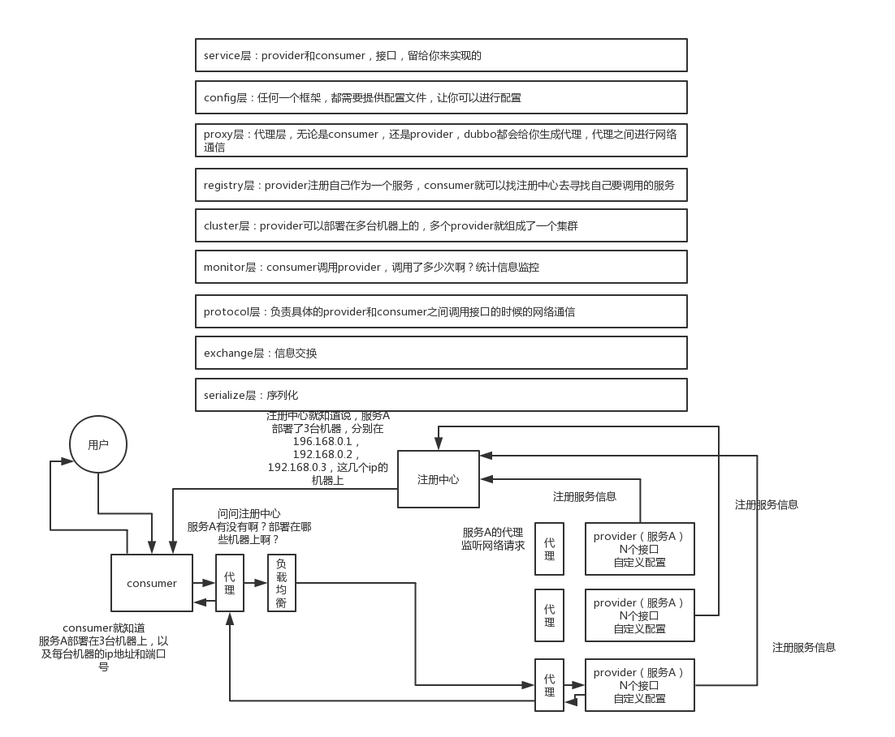

Dubbo
领域模型
在 Dubbo 的核心领域模型中：
Protocol是服务域，它是 Invoker 暴露和引用的主功能入口，它负责 Invoker 的生命周期管理。Invoker是实体域，它是 Dubbo 的核心模型，其它模型都向它靠扰，或转换成它，它代表一个可执行体，可向它发起 invoke 调用，它有可能是一个本地的实现，也可能是一个远程的实现，也可能一个集群实现。Invocation是会话域，它持有调用过程中的变量，比如方法名，参数等。
基本设计原则
- 采用
Microkernel + Plugin模式，Microkernel 只负责组装 Plugin，Dubbo 自身的功能也是通过扩展点实现的，也就是 Dubbo 的所有功能点都可被用户自定义扩展所替换。 - 采用 URL 作为配置信息的统一格式，所有扩展点都通过传递 URL 携带配置信息。
Dubbo 服务暴露过程

Dubbo 结构
- 第一层：service 层，接口层，给服务提供者和消费者来实现的
- 第二层：config 层，配置层，主要是对 dubbo 进行各种配置的
- 第三层：proxy 层，服务代理层，无论是 consumer 还是 provider，dubbo 都会给你生成代理，代理之间进行网络通信
- 第四层：registry 层，服务注册层，负责服务的注册与发现
- 第五层：cluster 层，集群层，封装多个服务提供者的路由以及负载均衡，将多个实例组合成一个服务
- 第六层：monitor 层，监控层，对 rpc 接口的调用次数和调用时间进行监控
- 第七层：protocal 层，远程调用层，封装 rpc 调用
- 第八层：exchange 层，信息交换层，封装请求响应模式，同步转异步
- 第九层：transport 层，网络传输层，抽象 mina 和 netty 为统一接口
- 第十层：serialize 层，数据序列化层
工作流程
- 第一步：provider 向注册中心去注册
- 第二步：consumer 从注册中心订阅服务，注册中心会通知 consumer 注册好的服务
- 第三步：consumer 调用 provider
- 第四步：consumer 和 provider 都异步通知监控中心

注册中心挂了可以继续通信吗？
可以，因为刚开始初始化的时候，消费者会将提供者的地址等信息拉取到 本地缓存，所以注册中心挂了可以继续通信。
Dubbo 支持哪些序列化协议？说一下 Hessian 的数据结构？PB 知道吗？为什么 PB 的效率是最高的？
Dubbo 支持不同的通信协议
- dubbo 协议：默认就是走 dubbo 协议，单一长连接，进行的是 NIO 异步通信，基于 hessian 作为序列化协议。使用的场景是：传输数据量小（每次请求在 100kb 以内），但是并发量很高。
- rmi 协议：走 Java 二进制序列化，多个短连接，适合消费者和提供者数量差不多的情况，适用于文件的传输，一般较少用。
- hessian 协议：走 hessian 序列化协议，多个短连接，适用于提供者数量比消费者数量还多的情况，适用于文件的传输，一般较少用。
- http 协议：走 json 序列化
- webservice：走 SOAP 文本序列化
Dubbo 支持的序列化协议
dubbo 支持 hession 、 Java 二进制序列化、json、SOAP 文本序列化多种序列化协议。但是 hessian 是其默认的序列化协议。
为什么 PB 的效率是最高的？
其实 PB 之所以性能如此好，主要得益于两个：
- 它使用
proto编译器，自动进行序列化和反序列化，速度非常快，应该比 XML 和 JSON 快上了20~100倍； - 它的数据压缩效果好，就是说它序列化后的数据量体积小。因为体积小，传输起来带宽和速度上会有优化。
dubbo 负载均衡策略和集群容错策略都有哪些？动态代理策略呢？
dubbo 负载均衡策略
random loadbalance
默认情况下，dubbo 是 random load balance ，即 随机 调用实现负载均衡，可以对 provider 不同实例 设置不同的权重，会按照权重来负载均衡，权重越大分配流量越高，一般就用这个默认的就可以了。
roundrobin loadbalance
这个的话默认就是均匀地将流量打到各个机器上去，但是如果各个机器的性能不一样，容易导致性能差的机器负载过高。所以此时需要调整权重，让性能差的机器承载权重小一些，流量少一些。
leastactive loadbalance
这个就是自动感知一下，如果某个机器性能越差，那么接收的请求越少，越不活跃，此时就会给 不活跃的性能差的机器更少的请求。
consistanthash loadbalance
一致性 Hash 算法，相同参数的请求一定分发到一个 provider 上去， provider 挂掉的时候，会基于虚拟节点均匀分配剩余的流量，抖动不会太大。如果你需要的不是随机负载均衡，是要一类请求都到一个节点，那就走这个一致性 Hash 策略。
dubbo 集群容错策略
failover cluster 模式
失败自动切换，自动重试其他机器，默认就是这个，常见于读操作。（失败重试其它机器）
failfast cluster模式
一次调用失败就立即失败，常见于写操作。（调用失败就立即失败）
failsafe cluster 模式
出现异常时忽略掉，常用于不重要的接口调用，比如记录日志。
failback cluster 模式
失败了后台自动记录请求，然后定时重发，比较适合于写消息队列这种。
forking cluster 模式
并行调用 多个 provider ，只要一个成功就立即返回。
broadcacst cluster
逐个调用所有的 provider。
dubbo动态代理策略
默认使用 javassist 动态字节码生成，创建代理类。但是可以通过 spi 扩展机制配置自己的动态代理策略。
dubbo 的 spi 思想是什么？
spi ，简单来说，就是 service provider interface，说白了是什么意思呢，比如你有个接口，现在这个接口有 3 个实现类，那么在系统运行的时候对这个接口到底选择哪个实现类呢？这就需要 spi 了，需要根据指定的配置或者是默认的配置，去找到对应的实现类加载进来，然后用这个实现类的实例对象。
dubbo 也用了 spi 思想，不过没有用 jdk 的 spi 机制，是自己实现的一套 spi 机制。
Protocol protocol = ExtensionLoader.getExtensionLoader(Protocol.class).getAdaptiveExtension();
Protocol 接口，在系统运行的时候， dubbo 会判断一下应该选用这个 Protocol 接口的哪个实现类来实例化对象来使用。
它会去找一个你配置的 Protocol ，将你配置的 Protocol 实现类，加载到 jvm 中来，然后实例化对象，就用你的那个 Protocol 实现类就可以了。
如何基于 Dubbo 进行服务治理、服务降级、失败重试以及超时重试？
服务治理
1. 调用链路自动生成
一个大型的分布式系统，或者说是用现在流行的微服务架构来说吧，分布式系统由大量的服务组成。那么这些服务之间互相是如何调用的？调用链路是啥？说实话，几乎到后面没人搞的清楚了，因为服务实在太多了，可能几百个甚至几千个服务。
那就需要基于 dubbo 做的分布式系统中，对各个服务之间的调用自动记录下来，然后自动将 各个服务之间的依赖关系和调用链路生成出来，做成一张图，显示出来，大家才可以看到对吧。

2. 服务访问压力以及时长统计
需要自动统计 各个接口和服务之间的调用次数以及访问延时，而且要分成两个级别。
- 一个级别是接口粒度，就是每个服务的每个接口每天被调用多少次，
TP50/TP90/TP99，三个档次的请求延时分别是多少； - 第二个级别是从源头入口开始，一个完整的请求链路经过几十个服务之后，完成一次请求，每天全链路走多少次，全链路请求延时的
TP50/TP90/TP99，分别是多少。
这些东西都搞定了之后，后面才可以来看当前系统的压力主要在哪里，如何来扩容和优化啊。
3. 其它
- 服务分层（避免循环依赖）
- 调用链路失败监控和报警
- 服务鉴权
- 每个服务的可用性的监控（接口调用成功率？几个 9？99.99%，99.9%，99%）
服务降级
比如说服务 A 调用服务 B，结果服务 B 挂掉了，服务 A 重试几次调用服务 B，还是不行，那么直接降级，走一个备用的逻辑，给用户返回响应。
举个栗子，我们有接口 HelloService。HelloServiceImpl 有该接口的具体实现。
public interface HelloService {
void sayHello();
}
public class HelloServiceImpl implements HelloService {
public void sayHello() {
System.out.println("hello world......");
}
}
<?xml version="1.0" encoding="UTF-8"?>
<beans xmlns="http://www.springframework.org/schema/beans"
xmlns:xsi="http://www.w3.org/2001/XMLSchema-instance" xmlns:dubbo="http://code.alibabatech.com/schema/dubbo"
xsi:schemaLocation="http://www.springframework.org/schema/beans http://www.springframework.org/schema/beans/spring-beans.xsd http://code.alibabatech.com/schema/dubbo http://code.alibabatech.com/schema/dubbo/dubbo.xsd">
<dubbo:application name="dubbo-provider" />
<dubbo:registry address="zookeeper://127.0.0.1:2181" />
<dubbo:protocol name="dubbo" port="20880" />
<dubbo:service interface="com.zhss.service.HelloService" ref="helloServiceImpl" timeout="10000" />
<bean id="helloServiceImpl" class="com.zhss.service.HelloServiceImpl" />
</beans>
<?xml version="1.0" encoding="UTF-8"?>
<beans xmlns="http://www.springframework.org/schema/beans"
xmlns:xsi="http://www.w3.org/2001/XMLSchema-instance"
xmlns:dubbo="http://code.alibabatech.com/schema/dubbo"
xsi:schemaLocation="http://www.springframework.org/schema/beans http://www.springframework.org/schema/beans/spring-beans.xsd http://code.alibabatech.com/schema/dubbo http://code.alibabatech.com/schema/dubbo/dubbo.xsd">
<dubbo:application name="dubbo-consumer" />
<dubbo:registry address="zookeeper://127.0.0.1:2181" />
<dubbo:reference id="fooService" interface="com.test.service.FooService" timeout="10000" check="false" mock="return null">
</dubbo:reference>
</beans>
我们调用接口失败的时候，可以通过 mock 统一返回 null 。
mock 的值也可以修改为 true，然后再跟接口同一个路径下实现一个 Mock 类，命名规则是 “接口名称+Mock” 后缀。然后在 Mock 类里实现自己的降级逻辑。
public class HelloServiceMock implements HelloService {
public void sayHello() {
// 降级逻辑
}
}
失败重试和超时重试
所谓失败重试，就是 consumer 调用 provider 要是失败了，比如抛异常了，此时应该是可以重试的，或者调用超时了也可以重试。配置如下：
<dubbo:reference id="xxxx" interface="xx" check="true" async="false" retries="3" timeout="2000"/>